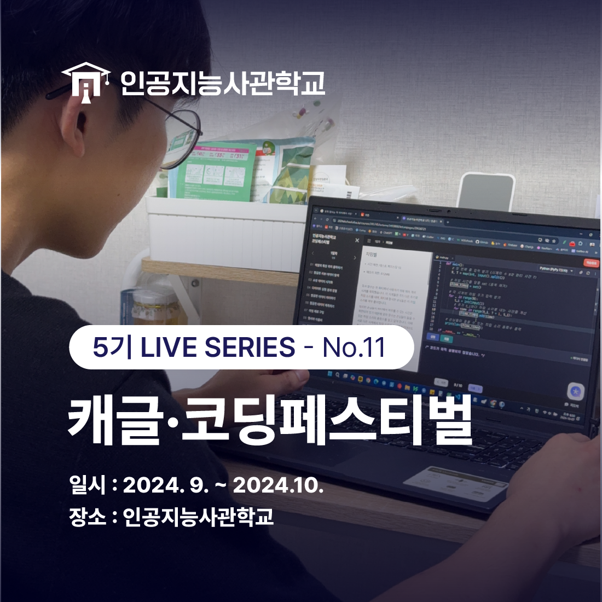
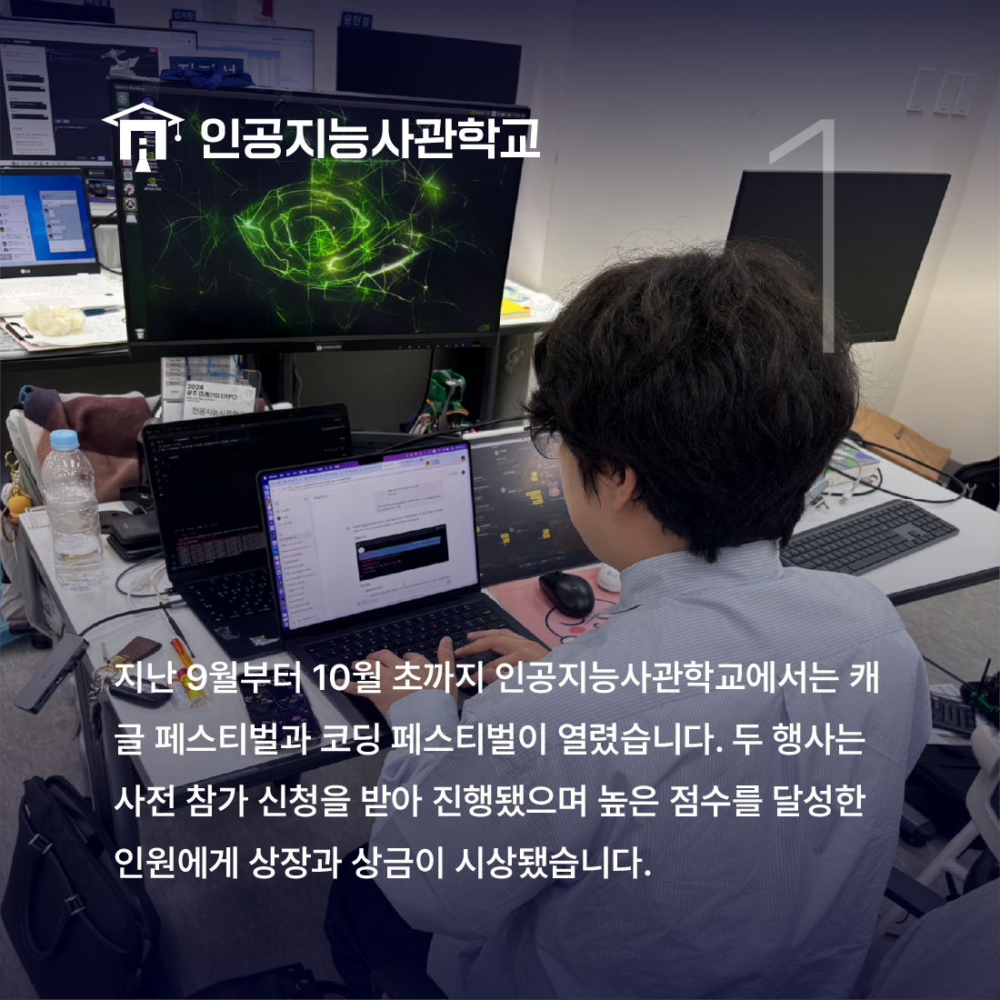
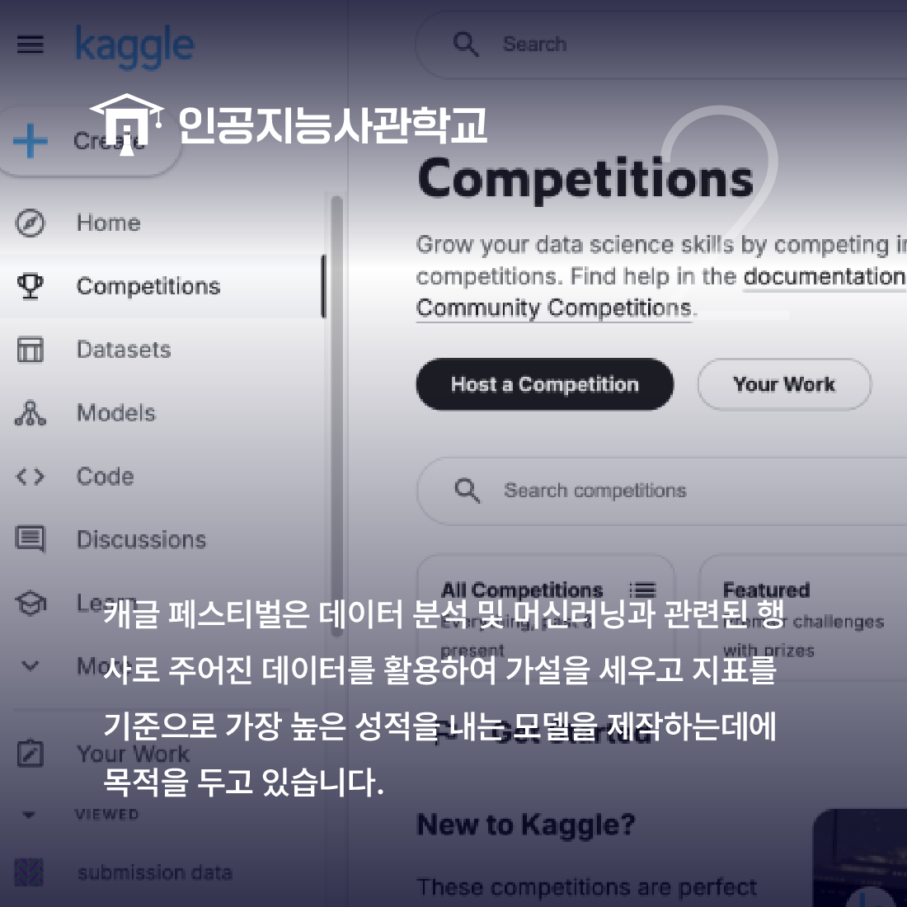
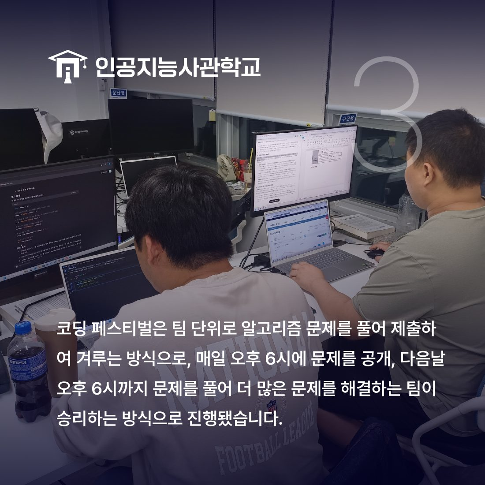
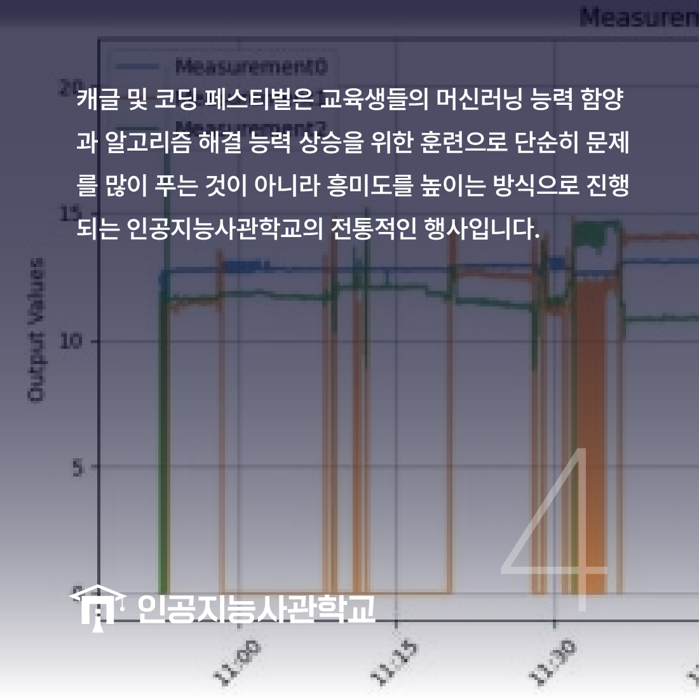
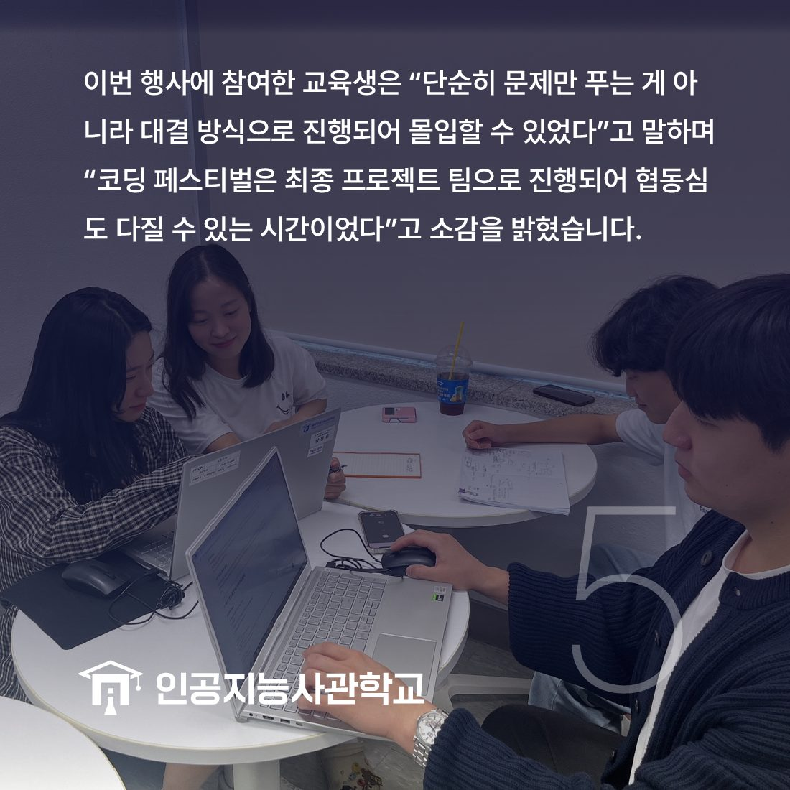

안녕하세요! 인공지능사관학교입니다. 😆

지난 9월부터 10월 초까지 인공지능사관학교에서
<캐글·코딩 페스티벌>이 열렸습니다.

이 행사는 사전 참가 신청을 받아서 진행됐는데요.
캐글 페스티벌은 개인으로, 코딩 페스티벌은 팀 단위로 진행됐습니다.
두 행사 모두 일주일 간 진행됐으며
문제를 제공하고 더 높은 점수에 도달하는 인원에게
상장과 상금이 시상됐습니다.🏆

캐글은 이미 전세계적으로 행해지고 있는 대회로
"예측 모델 분석 대회"라고 생각하면 된답니다!
데이터분석 및 머신러닝 능력을 키울 수 있는 행사로
주어진 데이터를 가지고 가장 높은 성적을 내는 모델을 제작하는 데
목적을 두고 진행됩니다.

코딩 페스티벌은 최종 프로젝트 팀 단위로 참여할 수 있으며
매일 오후 6시에 문제를 공개하고
다음날 오후 6시까지 문제를 풀어
일주일 간 더 많은 문제를 해결하는 팀이 승리하는 방식으로 진행됐답니다.

캐글·코딩 페스티벌은 교육생들이
더 즐거운 방식으로 인공지능, 알고리즘 공부를 할 수 있도록
준비한 인공지능사관학교의 전통적인 행사입니다.

행사에 참여한 교육생은 "단순히 문제만 푸는 게 아니라
대결 형식이라서 더 몰입하여 문제를 풀 수 있었다"고 말하며
"팀, 그리고 반 친구들과 함께 문제를 풀면서
협동심도 다질 수 있었다"고 소감을 남겼습니다.